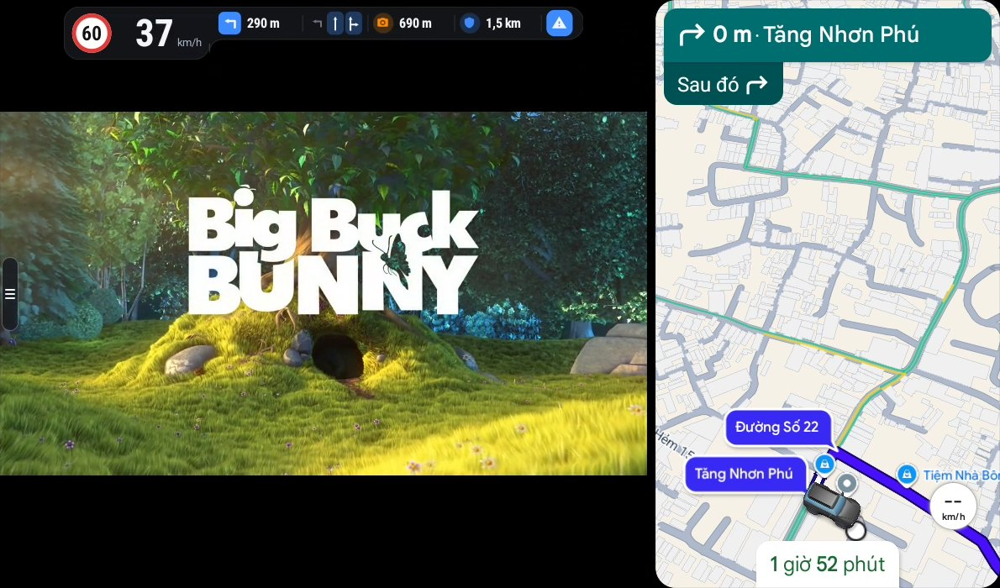
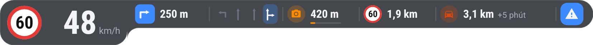
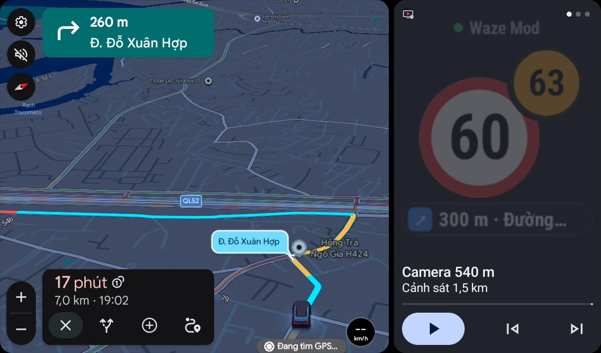

YouTube trên xe
Giao diện Mobile hoặc TV, đăng nhập YouTube Premium. Phím vô-lăng tua, dừng, phát; tìm video bằng giọng nói.
NTV DriveTV mở YouTube và trang web ngay trên màn hình Android Auto của xe bạn. Bong bóng tốc độ lấy dữ liệu từ Waze Mod nổi phía trên video, nên vừa nghe nhạc, xem video lúc dừng xe, vừa không bỏ lỡ biển báo hay camera.


Giao diện Mobile hoặc TV, đăng nhập YouTube Premium. Phím vô-lăng tua, dừng, phát; tìm video bằng giọng nói.
Biển giới hạn và tốc độ của bạn, chữ số to. Chạm giới hạn chuyển cam, vượt tốc nháy đỏ. Dọc hoặc ngang, ba cỡ, kéo đi đâu cũng được.
Camera và đèn đỏ có thanh đếm ngược từ 500 m. Hướng rẽ kèm tên đường, làn nên đi, kẹt xe, vùng tốc độ trung bình.
Đang mở Waze hay Google Maps, thẻ DriveTV bên cạnh vẫn hiện biển giới hạn, tốc độ của bạn, camera hoặc hướng rẽ sắp tới và trạng thái Waze Mod.
Tay nắm nhỏ ở mép màn hình, chạm một lần là mở. Dùng được núm xoay và phím của xe. Trang tự đổi sáng tối theo xe.
Thấy biển sai hay thiếu camera, hai chạm là lưu kèm vị trí. Về nhà xuất CSV, mở Waze Map Editor đúng chỗ để sửa.


Khối bên trái là thứ quan trọng nhất: giới hạn và tốc độ của bạn. Bên phải là cảnh báo, gần trước xa sau. Sắp tới ngã rẽ thì hướng rẽ và làn đường được đẩy lên đầu.

Không xem video thì cứ để Waze hay Google Maps toàn màn hình. Thẻ DriveTV bên cạnh vẫn hiện biển giới hạn to, tốc độ của bạn và những gì sắp tới.


App lưu vị trí ngay lúc bạn bấm, kèm tốc độ, giới hạn đang báo và tên đường. Báo cáo chỉ nằm trong máy bạn, không gửi đi đâu.
Chưa điền thông tin liên hệ. Sửa khối window.DRIVETV ở đầu file trước khi đăng.
| Điện thoại | Android 10 trở lên, không cần root. |
|---|---|
| Xe | Có Android Auto, kết nối dây hoặc không dây. |
| Dữ liệu tốc độ | Waze Mod V14 trở lên (có Data API), mở trên điện thoại khi đi. Không có Waze Mod thì vẫn xem video được, chỉ không có bong bóng tốc độ. |
| YouTube | Nên có YouTube Premium để không có quảng cáo. App không chặn quảng cáo. |
| Android Auto | Bật chế độ nhà phát triển và Unknown sources một lần (có hướng dẫn khi nhận link cài). |
Xe có Android Auto và điện thoại Android 10 trở lên là dùng được. Màn hình rộng thì video và bản đồ hiện cạnh nhau.
Không. App cài từ Google Play như app thường. Chỉ cần bật Unknown sources trong cài đặt Android Auto một lần.
Từ Waze Mod chạy trên điện thoại: giới hạn, tốc độ, camera, cảnh báo, hướng rẽ và làn. App không tự dò tốc độ bằng GPS.
Vẫn xem YouTube và trang web bình thường. Bong bóng chỉ hiện dòng báo chưa có dữ liệu, bạn có thể tắt nó.
App dùng YouTube như trên trình duyệt và không chặn quảng cáo. Đăng nhập tài khoản YouTube Premium thì không có quảng cáo.
Có. Bạn khoá màn hình điện thoại cho mát máy, video và bong bóng trên xe vẫn chạy.
Không. Báo cáo chỉ lưu trong điện thoại. Bạn tự xuất file khi muốn, rồi mở Waze Map Editor để sửa bản đồ.
Chỉ xem khi xe dừng. Khi lái, hãy để video chạy tiếng hoặc dùng bản đồ; người lái luôn chịu trách nhiệm quan sát đường.
Trả một lần 200.000đ, cài qua Google Play.